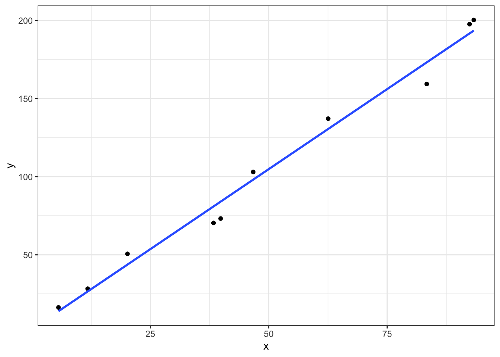

library(tidyverse)
library(magrittr)
library(broom)
library(broom.mixed)
library(marginaleffects)
library(brms)
library(rethinking)
library(tidybayes)
library(bayesplot)
library(bayestestR)
library(posterior)
theme_set(theme_bw())
options(
mc.cores = parallel::detectCores(),
brms.backend = "cmdstanr"
)
set.seed(19780503)simplesim
n = 10
x = runif(n, min = 0, max = 100)true_alpha = 5
true_beta = 2
true_sigma = 10
y = true_alpha + true_beta * x + rnorm(n, mean = 0, sd = true_sigma)
dat = tibble(x = x, y = y)ggplot(dat, aes(x = x, y = y)) + geom_point() + geom_smooth(method = "lm", se = FALSE)
ff = lm(y ~ x, dat)
tidy(ff, conf.int = TRUE)# A tibble: 2 × 7
term estimate std.error statistic p.value conf.low conf.high
<chr> <dbl> <dbl> <dbl> <dbl> <dbl> <dbl>
1 (Intercept) 2.56 5.28 0.485 0.641 -9.62 14.8
2 x 2.05 0.0907 22.5 0.0000000159 1.84 2.25predictions(ff) %>% tibble# A tibble: 10 × 10
rowid type estimate std.error statistic p.value conf.low conf.high
<int> <chr> <dbl> <dbl> <dbl> <dbl> <dbl> <dbl>
1 1 response 173. 4.16 41.6 0 165. 181.
2 2 response 80.9 2.97 27.2 5.05e-163 75.1 86.8
3 3 response 193. 4.87 39.7 0 184. 203.
4 4 response 84.0 2.93 28.7 1.06e-180 78.3 89.8
5 5 response 131. 3.04 42.9 0 125. 136.
6 6 response 43.8 3.86 11.3 7.55e- 30 36.2 51.3
7 7 response 192. 4.80 39.9 0 182. 201.
8 8 response 26.6 4.42 6.01 1.82e- 9 17.9 35.2
9 9 response 98.1 2.81 34.9 8.31e-267 92.6 104.
10 10 response 14.0 4.86 2.87 4.08e- 3 4.43 23.5
x y
<dbl> <dbl>
1 83.4 172.
2 38.3 81.4
3 93.3 197.
4 39.8 73.4
5 62.6 119.
6 20.2 49.9
7 92.4 197.
8 11.7 16.0
9 46.7 106.
10 5.57 24.8bf = brm(y ~ x, dat)Start samplingRunning MCMC with 4 chains, at most 12 in parallel...
Chain 1 Iteration: 1 / 2000 [ 0%] (Warmup)
Chain 1 Iteration: 100 / 2000 [ 5%] (Warmup)
Chain 1 Iteration: 200 / 2000 [ 10%] (Warmup)
Chain 1 Iteration: 300 / 2000 [ 15%] (Warmup)
Chain 1 Iteration: 400 / 2000 [ 20%] (Warmup)
Chain 1 Iteration: 500 / 2000 [ 25%] (Warmup)
Chain 1 Iteration: 600 / 2000 [ 30%] (Warmup)
Chain 1 Iteration: 700 / 2000 [ 35%] (Warmup)
Chain 1 Iteration: 800 / 2000 [ 40%] (Warmup)
Chain 1 Iteration: 900 / 2000 [ 45%] (Warmup)
Chain 1 Iteration: 1000 / 2000 [ 50%] (Warmup)
Chain 1 Iteration: 1001 / 2000 [ 50%] (Sampling)
Chain 1 Iteration: 1100 / 2000 [ 55%] (Sampling)
Chain 1 Iteration: 1200 / 2000 [ 60%] (Sampling)
Chain 1 Iteration: 1300 / 2000 [ 65%] (Sampling)
Chain 1 Iteration: 1400 / 2000 [ 70%] (Sampling)
Chain 1 Iteration: 1500 / 2000 [ 75%] (Sampling)
Chain 1 Iteration: 1600 / 2000 [ 80%] (Sampling)
Chain 1 Iteration: 1700 / 2000 [ 85%] (Sampling)
Chain 1 Iteration: 1800 / 2000 [ 90%] (Sampling)
Chain 1 Iteration: 1900 / 2000 [ 95%] (Sampling)
Chain 1 Iteration: 2000 / 2000 [100%] (Sampling)
Chain 2 Iteration: 1 / 2000 [ 0%] (Warmup)
Chain 2 Iteration: 100 / 2000 [ 5%] (Warmup)
Chain 2 Iteration: 200 / 2000 [ 10%] (Warmup)
Chain 2 Iteration: 300 / 2000 [ 15%] (Warmup)
Chain 2 Iteration: 400 / 2000 [ 20%] (Warmup)
Chain 2 Iteration: 500 / 2000 [ 25%] (Warmup)
Chain 2 Iteration: 600 / 2000 [ 30%] (Warmup)
Chain 2 Iteration: 700 / 2000 [ 35%] (Warmup)
Chain 2 Iteration: 800 / 2000 [ 40%] (Warmup)
Chain 2 Iteration: 900 / 2000 [ 45%] (Warmup)
Chain 2 Iteration: 1000 / 2000 [ 50%] (Warmup)
Chain 2 Iteration: 1001 / 2000 [ 50%] (Sampling)
Chain 2 Iteration: 1100 / 2000 [ 55%] (Sampling)
Chain 2 Iteration: 1200 / 2000 [ 60%] (Sampling)
Chain 2 Iteration: 1300 / 2000 [ 65%] (Sampling)
Chain 2 Iteration: 1400 / 2000 [ 70%] (Sampling)
Chain 2 Iteration: 1500 / 2000 [ 75%] (Sampling)
Chain 2 Iteration: 1600 / 2000 [ 80%] (Sampling)
Chain 2 Iteration: 1700 / 2000 [ 85%] (Sampling)
Chain 2 Iteration: 1800 / 2000 [ 90%] (Sampling)
Chain 2 Iteration: 1900 / 2000 [ 95%] (Sampling)
Chain 2 Iteration: 2000 / 2000 [100%] (Sampling)
Chain 3 Iteration: 1 / 2000 [ 0%] (Warmup)
Chain 3 Iteration: 100 / 2000 [ 5%] (Warmup)
Chain 3 Iteration: 200 / 2000 [ 10%] (Warmup)
Chain 3 Iteration: 300 / 2000 [ 15%] (Warmup)
Chain 3 Iteration: 400 / 2000 [ 20%] (Warmup)
Chain 3 Iteration: 500 / 2000 [ 25%] (Warmup)
Chain 3 Iteration: 600 / 2000 [ 30%] (Warmup)
Chain 3 Iteration: 700 / 2000 [ 35%] (Warmup)
Chain 3 Iteration: 800 / 2000 [ 40%] (Warmup)
Chain 3 Iteration: 900 / 2000 [ 45%] (Warmup)
Chain 3 Iteration: 1000 / 2000 [ 50%] (Warmup)
Chain 3 Iteration: 1001 / 2000 [ 50%] (Sampling)
Chain 3 Iteration: 1100 / 2000 [ 55%] (Sampling)
Chain 3 Iteration: 1200 / 2000 [ 60%] (Sampling)
Chain 3 Iteration: 1300 / 2000 [ 65%] (Sampling)
Chain 3 Iteration: 1400 / 2000 [ 70%] (Sampling)
Chain 3 Iteration: 1500 / 2000 [ 75%] (Sampling)
Chain 3 Iteration: 1600 / 2000 [ 80%] (Sampling)
Chain 3 Iteration: 1700 / 2000 [ 85%] (Sampling)
Chain 3 Iteration: 1800 / 2000 [ 90%] (Sampling)
Chain 3 Iteration: 1900 / 2000 [ 95%] (Sampling)
Chain 3 Iteration: 2000 / 2000 [100%] (Sampling)
Chain 4 Iteration: 1 / 2000 [ 0%] (Warmup)
Chain 4 Iteration: 100 / 2000 [ 5%] (Warmup)
Chain 4 Iteration: 200 / 2000 [ 10%] (Warmup)
Chain 4 Iteration: 300 / 2000 [ 15%] (Warmup)
Chain 4 Iteration: 400 / 2000 [ 20%] (Warmup)
Chain 4 Iteration: 500 / 2000 [ 25%] (Warmup)
Chain 4 Iteration: 600 / 2000 [ 30%] (Warmup)
Chain 4 Iteration: 700 / 2000 [ 35%] (Warmup)
Chain 4 Iteration: 800 / 2000 [ 40%] (Warmup)
Chain 4 Iteration: 900 / 2000 [ 45%] (Warmup)
Chain 4 Iteration: 1000 / 2000 [ 50%] (Warmup)
Chain 4 Iteration: 1001 / 2000 [ 50%] (Sampling)
Chain 4 Iteration: 1100 / 2000 [ 55%] (Sampling)
Chain 4 Iteration: 1200 / 2000 [ 60%] (Sampling)
Chain 4 Iteration: 1300 / 2000 [ 65%] (Sampling)
Chain 4 Iteration: 1400 / 2000 [ 70%] (Sampling)
Chain 4 Iteration: 1500 / 2000 [ 75%] (Sampling)
Chain 4 Iteration: 1600 / 2000 [ 80%] (Sampling)
Chain 4 Iteration: 1700 / 2000 [ 85%] (Sampling)
Chain 4 Iteration: 1800 / 2000 [ 90%] (Sampling)
Chain 4 Iteration: 1900 / 2000 [ 95%] (Sampling)
Chain 4 Iteration: 2000 / 2000 [100%] (Sampling)
Chain 1 finished in 0.1 seconds.
Chain 2 finished in 0.1 seconds.
Chain 3 finished in 0.1 seconds.
Chain 4 finished in 0.1 seconds.
All 4 chains finished successfully.
Mean chain execution time: 0.1 seconds.
Total execution time: 0.5 seconds.tidy(bf)# A tibble: 3 × 8
effect component group term estimate std.error conf.low
<chr> <chr> <chr> <chr> <dbl> <dbl> <dbl>
1 fixed cond <NA> (Intercept) 2.52 6.53 -10.5
2 fixed cond <NA> x 2.05 0.113 1.81
3 ran_pars cond Residual sd__Observation 10.6 3.41 6.24
conf.high
<dbl>
1 15.7
2 2.26
3 19.2 predictions(bf) %>% tibble# A tibble: 10 × 7
rowid type estimate conf.low conf.high x y
<int> <chr> <dbl> <dbl> <dbl> <dbl> <dbl>
1 1 response 173. 163. 183. 83.4 172.
2 2 response 81.0 73.5 88.1 38.3 81.4
3 3 response 193. 181. 206. 93.3 197.
4 4 response 84.1 76.6 91.1 39.8 73.4
5 5 response 131. 123. 138. 62.6 119.
6 6 response 43.7 34.2 53.2 20.2 49.9
7 7 response 192. 180. 204. 92.4 197.
8 8 response 26.5 15.7 37.2 11.7 16.0
9 9 response 98.1 90.8 105. 46.7 106.
10 10 response 13.9 1.96 25.9 5.57 24.8bf2 = ulam(alist(
y ~ dnorm(mu, sigma),
mu <- alpha + beta * x,
alpha ~ dnorm(0, 100),
beta ~ dnorm(0, 100),
sigma ~ dhalfnorm(0, 10)
), data = dat)precis(bf2) mean sd 5.5% 94.5% n_eff Rhat4
alpha 3.107 6.5568 -6.357 15.058 156.3 1.014
beta 2.031 0.1125 1.861 2.205 148.1 1.014
sigma 9.816 2.6222 6.486 14.510 170.6 1.004